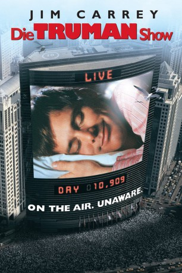

#554 Die Truman Show
Alternativ: The Truman Show
Auszeichnungen: für 3 Oscars nominiert 3 GoldenGlobes gewonnen 2 BAFTA-Awards gewonnen
 
 IMDB-Wertung: 8.1 / 10
IMDB-Wertung: 8.1 / 10  IMDB-TOP-Platzierung: 184
IMDB-TOP-Platzierung: 184  Metascore: 90
Metascore: 90 
Die Truman Show ist seit beinahe dreißig Jahren ein TV-Klassiker auf der ganzen Welt. Seit seiner Geburt ist Truman Burbank der Hauptdarsteller der Serie – ohne es überhaupt zu wissen. Produzent Christof entwarf eine künstliche Welt, genannt Seahaven, in der Truman von über 5000 Kameras 24 Stunden am Tag bei fast jeder Kleinigkeit beobachtet wird. Um die Fassade nicht zum einstürzen zu bringen sind seine Frau, Freunde und Verwandte allesamt Schauspieler. In Folge 10909 kommt es jedoch zu diversen versehentlichen Vorfällen die Truman misstrauisch werden lassen. Obwohl Schauspieler und Produzenten alles daran setzen Truman wieder in Zaum zu halten, lässt sich dieser nicht davon abhalten nach Ungereimtheiten zu forschen. Sein Streben nach einer echten Welt wird immer stärker, er plant seinen Ausbruch.
Jahr: 1998
Dauer: 103 Minuten
FSK: 12
Land: USA Studio: Paramount PicturesTonspuren: DD5.1 - ,
Untertitel: Deutsch, Englisch, , Französisch, , , , , , ,
Auflösung: 1080p (1920x1080) Größe: 11673 MB
Genre: Komödie, Drama, Sci-Fi
Regisseur:  Peter Weir
Peter Weir
Drehbuch: Andrew Niccol
Soundtrack: Burkhard von Dallwitz
Darsteller:
 Jim Carrey als Truman Burbank
Jim Carrey als Truman Burbank Laura Linney als Meryl Burbank / Hannah Gill
Laura Linney als Meryl Burbank / Hannah Gill Noah Emmerich als Marlon
Noah Emmerich als Marlon Natascha McElhone als Lauren / Sylvia
Natascha McElhone als Lauren / Sylvia Holland Taylor als Truman's Mother
Holland Taylor als Truman's Mother Brian Delate als Truman's Father
Brian Delate als Truman's Father- Peter Krause als Lawrence
- Ted Raymond als Spencer
- Judy Clayton als Travel Agent
- Judson Vaughn als Insurance Co-Worker
 Antoni Corone als Security Guard
Antoni Corone als Security Guard Marcia DeBonis als Nurse
Marcia DeBonis als Nurse Sam Kitchin als Surgeon
Sam Kitchin als Surgeon Ed Harris als Christof
Ed Harris als Christof Paul Giamatti als Control Room Director
Paul Giamatti als Control Room Director Adam Tomei als Control Room Director
Adam Tomei als Control Room Director Harry Shearer als Mike Michaelson
Harry Shearer als Mike Michaelson Philip Baker Hall als Network Executive
Philip Baker Hall als Network Executive- John Pleshette als Network Executive
- Philip Glass als Keyboard Artist
 O-Lan Jones als Bar Waitress
O-Lan Jones als Bar Waitress- Joe Minjares als Bartender
 Terry Camilleri als Man in Bathtub
Terry Camilleri als Man in Bathtub Jeanette Miller als Senior Citizen
Jeanette Miller als Senior Citizen Joel McKinnon Miller als Garage Attendant
Joel McKinnon Miller als Garage Attendant- Susan Angelo als Mother
 Yuji Okumoto als Japanese Family
Yuji Okumoto als Japanese Family- Saemi Nakamura als Japanese Family
- Melissa Fitzgerald als Girl Dancing with Marlon , uncredited
 Sergio Kato als Production Assistant , uncredited
Sergio Kato als Production Assistant , uncredited Marc Macaulay als (uncredited
Marc Macaulay als (uncredited- Mickalean McCormick als Assistant to Christof , uncredited
- Blair Slater als Young Truman
- Heidi Schanz als Vivien
- Ron Taylor als Ron
- Don Taylor als Don
- Fritz Dominique als Truman's Neighbor
- Angel Schmiedt als Truman's Neighbor
- Nastassja Schmiedt als Truman's Neighbor
- Muriel Moore als Teacher
 Mal Jones als News Vendor
Mal Jones als News Vendor- Earl Hilliard Jr. als Ferry Worker
- David Andrew Nash als Bus Driver / Ferry Captain
- Jim Towers als Bus Supervisor
- Savannah Swafford als Little Girl in Bus
 Mario Ernesto Sánchez als Security Guard
Mario Ernesto Sánchez als Security Guard- John Roselius als Man at Beach
- Kade Coates als Truman, 4 years
- Sebastian Youngblood als Orderly
- Dave Corey als Hospital Security Guard
Datei: X:\1998\Truman Show, Die (1998, FSK12, 1920x1080).mkv seit 09.03.2015
Festplatte: HD 1996-2002
 Es gibt insgesamt 86 Filme in der Gruppe '1998'
Es gibt insgesamt 86 Filme in der Gruppe '1998'